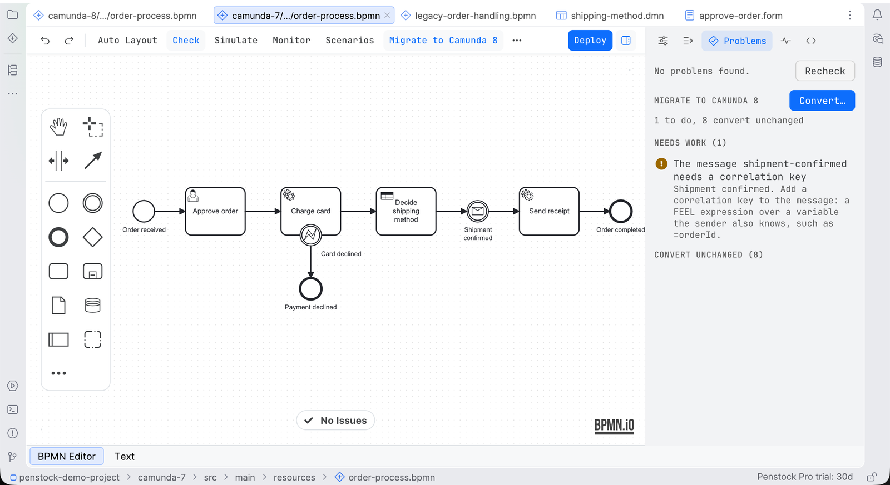

Guide / Moving and sharing
Camunda 7 to Camunda 8
The migration assistant shows what in your Camunda 7 project does not carry over to Camunda 8, converts what it can, and writes a report you can hand on.
Why and for whom
Camunda 7 Community Edition has reached its end of life. A team on it has to decide whether to move to Camunda 8, and then to do it: the diagrams, the decisions, the forms and the Java code behind them. The assistant does the reading and most of the converting, in your tool, next to the code.
It works on Camunda 7, Operaton and CIB seven projects. Both forks are read as a Camunda 7 source, because their diagrams use the same camunda: namespace.
What is free and what is Pro
| Part | Plan |
|---|---|
| Analysis: what does not carry over, why, what to do, who does it | Free |
| The migration report, as Markdown and one HTML page | Free |
| Converting a diagram, decision or form, with the preview | Pro, Team in a pipeline |
| Job worker skeletons written from your delegates | Pro |
See what does not carry over
- Open a Camunda 7 diagram.
- Press Migrate to Camunda 8 on the toolbar. It is pinned for Camunda 7, Operaton and CIB seven diagrams. It can be unpinned into the More menu.
- The Problems tab of the sidebar opens on its Migrate to Camunda 8 group. It says, for example, 7 to do, 3 to check, 19 convert unchanged. Press Migrate to Camunda 8 again to close it.
- Read the groups, each with its count: Needs work (a person has to do it), Review after converting (Penstock converts it, you check it), and Convert unchanged, collapsed, for what converts exactly. A diagram with nothing wrong in the other groups still shows No problems found. at the top of the tab.
- Click a line. The element is selected on the canvas. Each line says what is wrong, why, and what to do.

The group looks at one diagram. For the whole project, all files at once, Penstock lists each file with its status (ready, converts, needs work, blocked), its findings, and the Java code with what each class becomes.
Migrate a whole project
JetBrains
Open the Penstock tool window and find Migrate to Camunda 8. It lists every file with its status and findings, and the Java code with what each class becomes. Right-click a file and choose Convert to Camunda 8…, or use Convert All… on the root.
Command line
$ penstock migrate .
ready src/main/resources/approve-order.form 1 convert
needs work src/main/resources/order-process.bpmn 1 to do, 8 convert
error migration/message-catch: Shipment confirmed: The message shipment-confirmed needs a correlation key. ...
error migration/delegate-expression: Send receipt: Delegate ${sendReceipt} becomes the job type sendReceipt. ...
ready src/main/resources/shipping-method.dmn 1 convert
3 files to migrate for Camunda 8.8: 2 ready, 0 convert, 1 need work, 0 blocked.
Job workers to write: 2migrate,migrate analyze: list what does not carry over. Exit code 1 if there is an error, or a warning with--fail-on warning. Free.migrate convert: convert the files. It writes the Camunda 8 files into acamunda-8folder next to the one given, or into--out <dir>, and leaves the originals as they are. Use--dry-runfirst. Pro, and Team in a pipeline.migrate report: write the report. Free.--target 8.5to8.9,--format text|json|sarif|github,--baseline,--update-baseline,--verbose.
The converted folder gets a penstock.yaml of its own that says engine: camunda-8, and the penstock.yaml of the Camunda 7 files is not touched. See Every command.
VS Code
Not available in VS Code. The Camunda 7 to Camunda 8 conversion is not available in VS Code yet, and neither is the project list that shows it. Use penstock migrate on the command line.
What the words mean
| Status of a file | Meaning |
|---|---|
| Ready | Nothing to do. |
| Converts | Penstock converts it. The leftovers are a check. |
| Needs work | A person has to do part of it. |
| Blocked | It uses something Camunda 8 has no form for. |
| A finding is marked | Meaning |
|---|---|
| Converts | Penstock converts it exactly. |
| To check | Penstock converts it. A person checks the result. The finding stays after converting. |
| To do | Penstock leaves it and marks it on its element. A person does it. |
What it looks at
- Implementations. A Java class, delegate expression, expression or external task topic becomes a job type. Nothing runs that job until a worker exists, so this is an error until you write the worker.
- Listeners. Execution and task listeners become job types, on Camunda 8.6 and later (execution) and 8.8 and later (task). Earlier targets get a marker.
- Expressions. JUEL becomes FEEL, only where the result is exact. A refusal quotes its reason.
- Scripts. Groovy and JavaScript scripts cannot run in Camunda 8. Rewrite as FEEL, or move to a job worker.
- Forms. Generated forms become Camunda Forms, written beside the diagram, never over a form that is there. An embedded form has no Camunda 8 counterpart.
- Messages. A message needs a correlation key.
- Called processes, decisions, multi-instance loops, timers, errors, retries and priorities: each has its own rule, with a link to Camunda's documentation.
- The Java code. Each delegate, external task handler and listener is followed to its source and to what it becomes.
Convert
Pro
- In the Migrate to Camunda 8 group of the Problems tab, press Convert. Your tool can also convert a file or all files of a project.
- The diagram opens twice, side by side, in the visual diagram diff: before and after, each centred in its own pane under one title. The preview also names the folder the Camunda 8 files will go into,
camunda-8next to the converted folder, and you can change it there and with--out. Nothing is written yet. - Read what changed, then press Convert. The Camunda 7 files stay as they are, and the new ones carry a
penstock.yamlof their own that saysengine: camunda-8. - Converting into a folder that already holds converted files is not a dead end: the preview offers Replace the files in <folder>, with a warning when the folder is not under version control, and writes over them only when you tick it.
What Penstock cannot convert exactly stays in the file, marked on its element with a conversion:message that the Camunda Modeler reads too. It also stays a finding. Converting twice changes nothing more.
Job worker skeletons
Pro
Each Java delegate, external task handler or listener is followed to its source, with the file and line and what it becomes. Penstock can write a skeleton next to the code: a Spring job worker, a Node worker or a Python worker. The skeleton is written from the variables the code reads and writes and the BPMN errors it throws. Penstock never writes over a file.
Write a skeleton in your tool
JetBrains
In the tool window, open Migrate to Camunda 8, then Code. Right-click an item and choose Job Worker Skeleton… (Spring), Node Worker Skeleton… or Python Worker Skeleton…. Pro.
Command line
Not available on the command line. Skeletons are written from the IDE. penstock migrate prints how many job workers there are to write.
VS Code
Not available in VS Code. Job worker skeletons are written from the JetBrains IDE and are not available in VS Code yet. penstock migrate prints how many job workers there are to write.
The report
The report is Markdown and one self-contained HTML page.
Write the report in your tool
JetBrains
Press Migration Report on the root of Migrate to Camunda 8 in the tool window.
Command line
$ penstock migrate report .
wrote migration-report.md
wrote migration-report.htmlUse --out <dir> to choose the folder.
VS Code
Not available in VS Code. The migration report is not available in VS Code yet. Run penstock migrate report on the command line.
The HTML is one self-contained page for a manager: scope, what the move costs (job workers to write, expressions to rewrite, scripts to replace, listeners to move, forms to rebuild, called processes, decisions), files with their status, and the code.
What it does not do
- It does not move running instances or history. Instances can finish on Camunda 7, or be moved with Camunda's Data Migrator. The Data Migrator needs the element ids to stay as they are. The converter keeps them.
- It does not rewrite your Java code. Use the OpenRewrite recipes from Camunda's migration guide in your build, where a reviewer sees the diff. The assistant writes new files beside the old code.
- It never guesses. What it cannot convert exactly, it marks.
Common problems
- There is no Migrate to Camunda 8 button.
- It shows for Camunda 7, Operaton and CIB seven diagrams. A Camunda 8 or Classic BPMN diagram has none. The group says Nothing to convert: this is not a Camunda 7 diagram.
- Convert asks me to buy Pro.
- Converting is a Pro feature. The analysis and the report are free. See Plans and licence.
- After converting, the check still lists findings.
- Those are the ones a person has to do or check. They stay on their element until you fix them.
- "Unknown target".
- Use 8.5, 8.6, 8.7, 8.8 or 8.9.
- "There is nothing to migrate".
- No Camunda 7 diagram, decision or form was found in the path you gave.